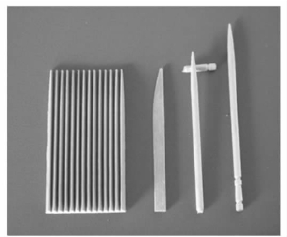

尽管设计的各种表现形式在很多层面上深刻地影响着我们的生活，但其实现方式各不相同。此外，为了使看似混乱的状况显得有条理，有必要制定一些基本原则以供解释。为了达到这个目的，其中一个有效的手段是区分设计的实用性和重要性。通过区分实用性和重要性，我们将努力阐明设计讨论中围绕“功能”问题所产生的大量混乱。
1896年，美国建筑师路易斯·沙利文在《高层办公大楼的艺术考量》一文中写道：“所有有机的和无机的、物质的和非物质的、人类的和超人类的事物，所有头脑、心灵以及灵魂的真实表达中都渗透了一个普遍规律，那就是生命通过表达可被认知，而形式永远追随功能。这就是规律。”
这些观点很大程度上以达尔文的进化理论为前提，特别强调了达尔文关于适者生存的观点。到了十九世纪晚期，人们已经普遍接受了鱼类或鸟类形态的演变是对自然环境的回应的观点，至于动物和植物与周遭环境紧密相连的说法也成了老生常谈。在那样的背景下，功能优于形式的说法确实是很有说服力的。斑马身上的条纹，或者鹦鹉身上绚丽的羽毛，在不变的生存法则中都有着明确的目的。沙利文还认为功能中包含的装饰用途同样是设计中不可或缺的一部分。
沙利文的观点被浓缩成一句格言，即“形式追随功能”。这句格言后来成了设计中的一个时尚说法，虽然在这个过程中它本身已经发生了一些改变。设计的功能性被广泛地解释为它的实际效用，人们在此基础上推断出事物是如何被制造出来的，以及事物的预期用途应该如何通过形式得到合理地反映。这种推断忽略了装饰的作用，也忽略了意义类型如何通过形式来表达，或者如何附着在形式之上。就这一点而言，我们还可以鼓吹另一句格言，即“形式追随想象”。换言之，与自然世界相对的人类生活常常从梦想和愿望中而非仅仅从实践中获得灵感和动力。
因此，功能成了设计中最受争议的一个名词。二十世纪早期，在“功能主义”的庇护伞下集结的一些主要思想清楚地表达了一种设计理念，这种理念反对十九世纪时期流行的华丽装饰。这种反对可能意味着许多事情。对一些设计师，比如曾活跃于二十世纪早期德国的彼得·贝伦斯而言，古典建筑和设计是灵感的来源之一。十九世纪的风格是不加选择地吸纳历史中所有的标准和文化，让人目不暇接。剥去装饰后产生的结果可能是规则的几何形式和令人满意的品质，这些品质与十九世纪典型的风格相反。传统的形式可以通过类似的方式简化和提炼，就像W.R.莱瑟比和戈登·罗素在作品中所呈现的那样。W.R.莱瑟比和戈登·罗素是和贝伦斯同时代的人，也是英国工艺美术运动的继承者。虽然这两种趋势都与过去保持着关联，但它们都可以同时声称自己代表着当下。
第一次世界大战后，在欧洲兴起了另外一种完全否定过去的更为激进的趋势。与这一趋势相关的人物主要有荷兰理论家及风格派的领导人物特奥·范·杜斯堡、德国包豪斯建筑学派的领袖沃尔特·格罗皮乌斯以及法国的勒·科尔比西耶。他们发展了一整套关于抽象几何形式的理论，据称该理论最适合标准化的工业生产。然而，大规模制造技术也能生产复杂的装饰形式，而且就生产过程而言，装饰确实能提供优势。比如，二十世纪三十年代，在录音机塑料包装盒的生产中使用了重压技术，但这种技术很难生产出一个简单的盒状的东西，因为压制过程中产生的巨大压力会在宽大、平整的表面上留下“流水线”似的痕迹。因此，最好是通过一些办法将大块的表面进行分割，比如把表面分层，或者在上面加点、刻影线等等。人们对规则的几何形式的追求并非仅仅在于它反映了生产方式的内在特点，实际上，它更多地是作为一种意识形态，反映了设计在工业社会中所起的作用。几何形式并不是最适合实践操作的，但它却成了一个最有力的隐喻，表现了机械化时代理想的形式应该怎样。我们可以从中获得数个概念，这只是其中之一。从流线型作业的水滴弧形和速度线中，我们可以得出类似的具有同样效力的概念。
过去，教条式的专断限制了形式研究的范围。我们需要一种综合性更强的定义来界定功能，并以此来取代教条主义的种种主张。该定义首先要能将功能的概念一分为二，即分为实用性和重要性这两个主要概念。
实用性可被定义为使用过程中的适合性。这就表示它所关注的是事物运作的方式、设计的实用效果范围，以及设计的示能性 [2] 或可能性的范围（反之又会产生怎样的后果）。让我们来举一个简单的例子。专门用来准备食物的菜刀，它的首要实用价值是作为一把切削工具。为了能够有效地工作，原材料必须使刀刃保持锋利，而且在使用过程中不易变形（施压的时候，太薄的刀刃会晃动，使用起来不仅效率低而且十分危险）。使用时也要求刀把的手感好，能够被充分地、紧紧地握住。由于受制于技术和材料因素，实用性在此主要考虑的是效率问题。然而，高效在使用过程中也可带来相当的快感。当所有细节方面都被整合在一起，最好的菜刀便成了感官的延伸，它必然适合手的操作，令人产生一种微妙的均衡感和控制感，给人一种恰到好处的满足感。从这一点来看，效率代表着不同程度的回应和意义。在实践过程中，实用性和重要性紧密地交织在一起，所以，要将两者准确地区分开来有时确实很困难。
作为设计中的一个概念，重要性阐释了在使用过程中形式呈现意义的方式，或者说形式在这一过程中的作用和意义。形式常常是习惯模式和仪式中强有力的符号或者象征。与强调效率相反，重要性更多关注的是表达和意义。两个关于木制牙签的简单例子（极少有比它们更为基础的形式了）就可以阐明实用性和重要性之间的差别，以及它们通常具有的相似之处。
第一根牙签，市场上也称为“牙棒”，是由乔丹公司，一家专门生产牙具的挪威公司生产的。它长不足两英寸，呈楔形，不仅可在餐后十分有效地清洁牙齿和牙龈，也可随时维持口腔卫生。为了完成特定任务而精心设计的这么一个小件物品上凝聚了高度的实用性。
第二个例子是一根老式的日本牙签。它比乔丹牙棒要长半英寸，呈圆形，仅一端削尖，另一端是圆锥体切面，切面下方是几圈切口。削尖的一端很明显与物体的实用性（将陷在牙齿里的食物剔出）有关。乍看之下，另一端似乎仅仅是为了装饰，我们无法轻易地从它的形状中看出任何目的。然而，从日本社会的传统饮食模式中可以找到关于这一形式的解释。当用餐者跪在漆桌旁的榻榻米上时，这一设计则成了感性和优雅的表现。此时使用的大部分器皿和人工制品本身都是艺术品，尤其是餐桌，在它光泽的表面上常嵌有或绘有精美的图案。用餐时把牙签置于这样精美的桌面上是十分不雅的，所以人们发明了牙签座（实用性和重要性的另一个结合）。这样牙签就可以放置在牙签座上，并且避免已经使用过的那一端接触到桌面。这种牙签本身在设计上就已经解决了这个问题。牙签上的那几圈切口使牙签的一端能被轻易地折断，折断的部分可以当成牙签座使用，用来摆放已经使用过的牙签头。这个例子充分展示了，即便是最微不足道的实用物体身上也体现了某些价值。

图7 牙签。
当然，也有很多设计仅仅只具备实用性或仅仅只具备重要性。比如，专门提供某些服务的产品或用途极其特殊的工具往往只具备实用性，如手锯、车床和医疗设备（如超声波仪器）。当被报道的信息具有很强的任务性时（如列车时刻表），排版和字体必须清晰、简明、直接地传递必要的信息。实用性设计最主要的一个条件就是它必须有效地执行或支持某项任务。然而，一件首饰、一尊瓷雕，或者一个装全家福的相框并无那样的特定目的。相反，它们的目的可能是使人达到预期的快感或起到一定的装饰效果。无论它们的意义是来自某个特定潮流或年代的社会品味，还是来自个人情感基础之上的对联系和意义的再创造，它们的重要性都是固有的，并不依赖于任何具体的示能性。
此外，除了明显以实用性为特点或以重要性为特点的事物外，还有无数的产品以惊人的方式将二者相结合，它们既注重产品的功效又注重产品的表达方式。一件照明设备一方面是一件具有实用性的照明工具；另一方面，通过雕塑形式，它同时又表现出高度的个性，甚至具有独特的风格。在用餐时，餐具、刀具、玻璃器皿都有着特殊的用途。这些器物形态各异，常常被饰以复杂的装饰性图案。在我们这个时代最为典型的例子也许是汽车。从研发早期开始，汽车除了具有将人和行李从一地运往另一地的实用功能外，它实际上也是自我和个人生活方式的一种延伸。比如，劳斯莱斯汽车不仅展示了极高的技术工艺，同时也是社会成就和地位的一种象征。
然而，物品的重要性以及它们身上被赋予的精确价值，常常因文化不同而产生巨大的差异。在上面所提到的日本牙签的例子中，我们必须首先认识到深奥微妙的礼节与日本文化之间的特殊关系。由于不同的文化通过特有的方式表达不同的价值，这便引发了一些重要问题，其中包括文化是如何衍生出那些被编制成规则或规范的行为模式的。
图8 个人成就的象征：劳斯莱斯银色天使2000。
但是由于产品的重要性随时空的变化而变化，因此产品的意义并非永久不变。比如，二十世纪三十年代在德国由阿道夫·希特勒（希特勒本人就是狂热的汽车爱好者）直接下令生产的大众甲壳虫汽车就是一个典型的例子。1937年，由德国一个正式的工人组织德国劳动阵线生产的第一个汽车模型——“欢乐力量的车子”，经宣传后成了展示纳粹党功绩的标志。第二次世界大战结束以后，大众汽车重新投入大规模的生产。二十世纪五十年代，它成功出口到美国，并成为风靡一时的时尚物品。它的设计在这段时期前后并没有任何改变，但是产品的意义却发生了显著的转化：在三十年代，“欢乐力量的车子”是法西斯主义的标志，而到了六十年代，美国人称它为可爱的“爬虫”。这辆车也是沃尔特·迪斯尼公司创作的《疯狂金龟车》系列电影中的主角。1997年，新款甲壳虫一问世便迅速引领了美国的时尚，进一步加深了它意义上的转化。
文化的概念主要可以分为两大类，首先是文化即教养的观念。这种观念促使我们从被认为具有特殊价值的那些风格或行为中获得观念或能力。人们已经形成了一些等级观念：认定一场古典音乐会比一场摇滚音乐会更有意义，或者认定一件雕塑作品比一件工业设计产品更有价值。随着众多美术馆加大对设计作品的收藏和增加以设计为主题的大型展览的场次，显然在某种程度上，设计已经被逐步地纳入到这个等级观念之中。然而，通常这种以“装饰艺术”为名、将设计概念专业化或排他化的行为并非是为了了解设计在现代生活中的作用，而主要是与美术馆为当代所树立的形象有关。
第二个关于文化的主要概念，同时也是本书讨论的基调，是从一个更概括的观点出发，将文化视为一个群体内部的共享价值。在这个意义上，文化是指不同的社会群体特殊的生活方式，尤指通过学习获得的行为模式，经由价值观、通讯系统、组织机构以及人工制品等方面来表现。文化渗透到日常生活中的方方面面，它包含了在不同情况下人们实践它的方式。文化让我们考虑将设计的范围进一步扩大，并帮助我们了解设计在人们生活中所起的作用。如果将讨论范围扩大，它还能够将更出色的定义纳入进来。
文化价值的影响是多层次的，正如设计品在艺术处理和作品内涵上所反映的那样。过去，不同地方的人们生产不同的产品，这些产品在整体上功能相近，最终大大丰富了该产品的内容。在某种程度上，这一现象现在依旧存在。比如，当我们考察食物的烹调方法时，我们会发现，在中国人们仍旧只用一口锅来烹调大部分的食物，而在欧洲特定的平底锅有着特殊的用途。前者烹调出来的食物需要用筷子来帮助食用，而后者则备有一套专门的刀具。随着时间的推移，特定的文化背景、习惯和价值观在许多方面都照着各自的方式形成，借由特定的形式来表达。
在面对具体的时空特点时，我们主要会遇到两个方面的难题。第一个难题是我们需要适应现存的文化模式，在不破坏或不违反现存文化模式的基础上，试着与其结合或者与之同化。第二个难题包括排除这些模式中不可避免的变化。与前者相比，后者要复杂得多。
如果产品简洁且实用，问题似乎会少很多，也不会如此迫切，还能将文化冲突的可能性降到最低。国际市场中流通的大量奢侈品，如爱马仕皮具，尽管价格昂贵但本质上并不复杂，可以同等对待。
不了解文化差异的力量会造成惊人的后果。二十世纪八十年代初，哈佛大学市场营销专家西奥多·莱维特因提出全球化理论而名噪一时。他认为产品的差异性在逐步减小，标准化产品将会是全球未来的营销手段。与此同时带有几分巧合的是，家用电器制造商伊莱克斯公司的管理层也认定欧洲应该是一个专售冷藏或冷冻冰箱的市场。他们认为欧洲就像美国一样，就靠几个大型制造商提供几款固定的设计就行了。伊莱克斯公司为推行这一目标于1983年制定了相应的政策。然而，由于欧洲拥有众多的文化背景，它们强硬地拒绝接受美国的模式，伊莱克斯公司为此付出了昂贵的代价。例如在北欧，人们每周购物一次，因此冷藏和冷冻的空间必须大小相同。在欧洲南部，人们仍习惯每天在当地的市场购物，他们需要小型的冰箱。冷冻蔬菜在英国比在世界上其他任何地方都更受欢迎，所以冷冻室需要占用60%的空间。有些人希望冷冻室位于上部，有些人则希望冷冻室位于底部。伊莱克斯公司试图使生产更加简化，但七年过去了，它的生产中仍包含了一百二十种基本设计，这些基本设计又衍生出一千五百种变型，同时它还发现有必要研发新的冷藏柜以迎合具体的利基市场。
包装和视觉形象也可能暗藏危险。可口可乐公司前任执行长官罗伯托·戈伊苏埃塔说，他们公司进入中国市场后，才发现公司名称的音译为“嗑口蝌蜡”（啃蜡制的蝌蚪）。人们在主要生产开始前发现了这个问题，聪明地将包装上的中文写成了“可口可乐”，表示好喝又能带来快乐的意思。
又如东亚一款知名品牌的牙膏，在数十年间都采用“Darkie”（对黑人的蔑称）这一商标销售，这又是一个漠视全球化时代文化危险的例子。牙膏的包装上是一个卡通式的滑稽演员，黑脸，头戴大礼帽，牙齿泛出珍珠白的光芒。起先在当地市场销售时，人们似乎并不觉得会引起什么问题，但是，当1989年高露洁——棕榄公司收购了这个产品的香港制造商后，却在美国遇到了意想不到的麻烦。在美国，一时之间流言四起，传言这家公司正在销售一款带有种族歧视的产品。随即，该公司纽约总部外就出现了高举横幅的示威抗议者。为了安抚美国批评者同时又不破坏这个亚洲知名品牌，高露洁——棕榄公司试图将商标界定为“Darlie”，并重新设计了视觉形象与之匹配。包装上的形象被修改为一个优雅的时髦男子，仍然打着白色的领结，戴着大礼帽，现出一口闪闪发亮的牙齿，但却没有标明他的种族身份。
然而，全球化不应该仅仅被视作适应或顺应的问题。西奥多·莱维特指出了技术和传达的发展将会通过何种方式将全球联系在一起，进而从根本上改变一些文化观念。在这些方面，他的观点确实有几分道理。全球化带来的影响表明文化并不一定需要依靠特定的环境，每个人不一定都遵守着一套大致相同的价值与信仰体系。全球化将有可能带来一个与我们所知的文化都不同的文化。未来的文化模式在很多层面上都将趋向多样化而非同质化，将强调文化创新而不是留恋文化遗产。但是，任何类似的转型都不是简单的，也不容易达到。
设计可以使不同国家、不同种族之间的价值观发生改变。设计的作用可能体现在产品层面，比如摩托车和电视机，然而，全球电视广播和广告中不断出现的影像冲击、交互式网站中简易又适合操作的配置，或企业的形象所带来的影响应该更大，比如美国有线新闻网、亚马逊网，又如麦当劳、可口可乐公司等。由于它们无处不在，人们又普遍受其吸引，因此造成了大量的冲突，受到法国民族主义、印度和伊斯兰宗教激进主义在内的各方的抨击。抨击各方的背景和依据各不相同，但都以保护文化身份为名义，共同抵制全球设计意象代表的新世界主义模式。当然，将所有的反全球化行为都与极端组织挂钩是错误的。有许多人士真正担心的是，那些看似无关、对其行为又不负责任的力量往往会造成地方性的失控和身份的丧失。虽然人们能够观看到世界另一端的更新报道，但这种便利并不能弥补它们对孩子们产生的巨大影响。这些影像和行为充满异域色彩，但同时带有一定的胁迫性。从一个比较世俗的角度出发，这也容易触犯到他人的习俗。比如，日本一家大广告公司给一款美国肥皂做广告，广告中描述了一个男人走进浴室，此时他的妻子正躺在浴缸里。在美国，这可能被理解为一种性诱惑，但在日本却被认为有伤风化，让人无法接受。
我们不能将这些回应当作是改变引起的必然结果，进而忽略它们。在任何水平下，与世界同步交流的能力都算是一个了不起的进步，当这一能力被认为是一种威胁时，技术的作用和力量确实是一个问题。的确，国际市场上充斥的产品太多，服务泛滥，但人们极少甚至可以说是完全没有考虑到它们是否能被理解或被方便地使用。利用全球设计中的一致性作为解决问题的基本原理，这样的设想会引发出新的问题。其实，只要做出少许规划，我们就可以确保合理地顺应当地的情况。
很明显，人类能够在一个相当广的可能性范围内创造出富有意义的形式。最为意味深长的是，形式可体现抽象意义，超出有形形式的界限，成为宗教和信仰符号，表达人类最深层的信仰和渴望。无论是太平洋岛屿上的部落、北美大平原上的图腾，还是佛陀、湿婆（印度教的主神之一）的雕像，又或是基督教的十字架，这些具体的形象本身并不隐射它们所代表的信仰和价值的复杂性。然而，人们认为这些符号反映了客观的社会事实，所有信仰它们的人都能领会它们所象征的意义。与此同时，人们在不与某文化内其他主要信仰模式冲突的情况下，也可以将强烈的个人目的投射到一些物品上。
1981年，两名芝加哥社会学家，米哈伊·奇克森特米哈伊和尤金·罗奇伯-霍尔顿联合发表了一项题为《物品的意义》的研究成果。这项成果讨论了物品在人类生活中所扮演的角色。他们写道：
在大规模生产和广告业发达的时代，我们并不太信任人们能够将意义附加在物品之上，也不太相信在设计师、制造商原本的构想之外，人们能从一件物品、一种传达中想象性地创造出某种意义。我们总是强调推行意义模式，使客户与制造商的立场一致。人类将精神力量投射到客观物品上的能力异常强大，因此，学习并了解设计的重要性是非常有意义的。在某种重要的意义上，有人认为设计过程的结果，即最终产物，不应该成为研究和理解设计的中心问题，而应该被看作是设计师的意向与用户需求和感受之间的相互作用。正是在这个互动的层面上，才产生了有关设计的意义和重要性的讨论。基于这个原因，在接下来的章节中，我们在更加细致地探讨设计的结果时，将不会使用平面设计或工业设计（尽管会有必要讨论这些术语）等专业设计活动中通用的分类，而是按照概念范畴分为物品、传达、环境、系统和形象设计。在这个范畴中我们不仅会进一步研究设计者的概念，同时也会研究用户的反应与参与的概念。